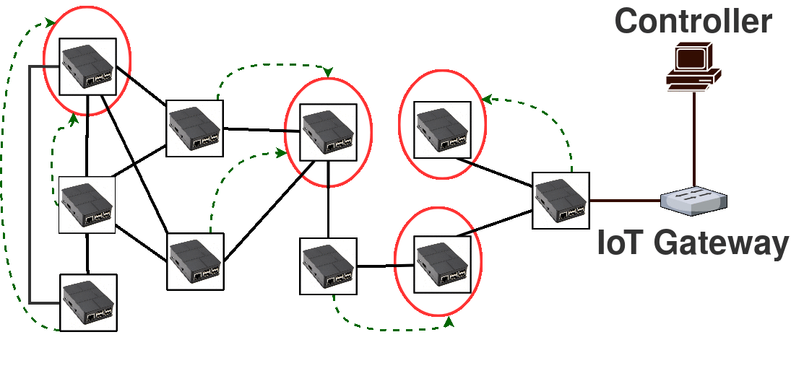
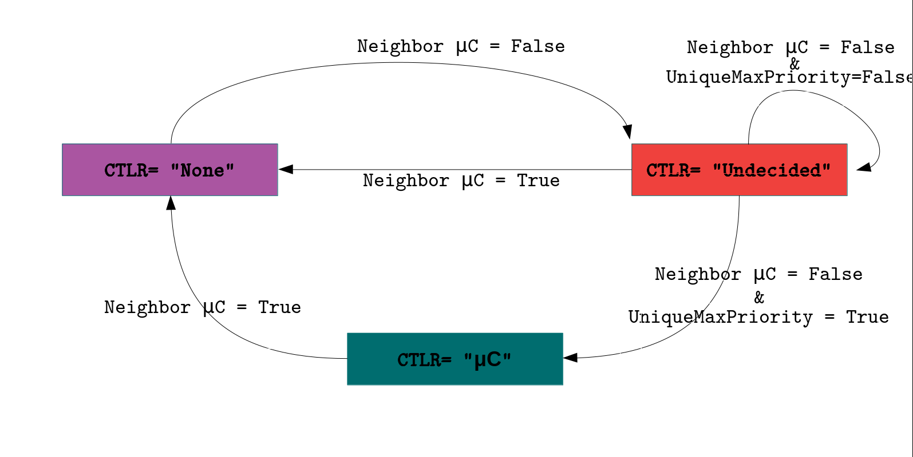

Usecases
Fault Tolerance
Aloe readjusts the μC containers in case any failure occures.

Elastic Auto-scalability
Depending on the topology change Aloe finds suitable placement of μC
Dummy
Distributed SDN can achieve scalability by deploying multiple instances.
Self-stabilizing Algorithm
| Aloe relies on a self-stabilizing maximal indipendent set (SS-MIS) algorithm for μC placements. It ensures that each The distributed SS-MIS converges in linear time. |  |